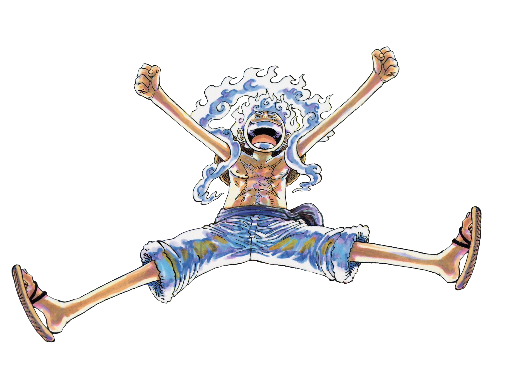

Welcome to My Pirate Site, my journey to becoming the Pirate King.
for my thoughts click here ^ 
BIO:
Zev Stieglitz (aka Joyboy)
Zev Stieglitz, known professionally as Joyboy, is an American artist and musician recognized for his unique and raw blend of melodic rap and introspective lyrics. Masterfully intertwining pirate-inspired themes, Joyboy is emerging onto the music scene with a distinct sound. He has been gaining attention for his unapologetic storytelling and innovative approach to music. As he puts it, “I just want to be free and have fun.”
Career Highlights:
"FRONTLINE!!!"
Joyboy released "FRONTLINE!!!", a track that delves into the challenges of pursuing one's dreams. The song received acclaim for its raw portrayal of ambition and resilience. Music journalist NSF commented, "*Zev is dropping pieces of fine melodic art, not just music.*" (Source: Medium)
Collaborations and Productions:
Joyboy not only produces his own beats but also frequently collaborates with producer Fern_shy, resulting in tracks like “FRONTLINE!!!”, “NEVERLAND!”, and “ADDICTED2LIVING!” These collaborations shook music standards, showcasing a synergy that resonates with the soul of listeners.
Joyboy at the show
Social Media Presence:
Active on platforms like Instagram and X (formerly known as Twitter), Joyboy engages with his audience by sharing personal thoughts on living freely and giving insights into upcoming projects. In a recent post, he teased new music set for release in 2025 and announced multiple shows. (Source: Instagram X snap)
Musical Style and Influence:
Joyboy's music is characterized by its melodic flow and introspective lyrics, often exploring themes of personal growth, struggle, and determination. His ability to blend catchy rhythms with meaningful storytelling has positioned him as a noteworthy artist in the contemporary music landscape. The pirate-inspired elements of his music evoke imagery of the open sea, treasure hunts, and daring escapades, weaving in themes of adventure and freedom. His unique fusion of these themes with modern rap creates an unforgettable auditory experience.
Discography:
- "FRONTLINE!!!" (2025)
- "NEVERLAND!" (2025)
- "ADDICTED2LIVING!" (2024)
- "BLACKFLAG!" (2024)
- "SEETHESKY!" (2024)
- "SEND TO THE GODS!" (2024)
- "MIRACLES!" (2023)
- "Whole 9 Yards!" (2023)
- "So Special! Ft fathericonic" (2023)
Online Presence:
Joyboy's tracks are available on his SoundCloud profile and all major platforms, where listeners can stream his latest releases.
For updates on upcoming music, performances, and personal insights, follow Joyboy on:
As Joyboy continues to evolve as an artist, his commitment to authenticity and musical innovation remains at the forefront of his work.